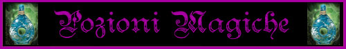
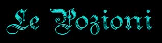
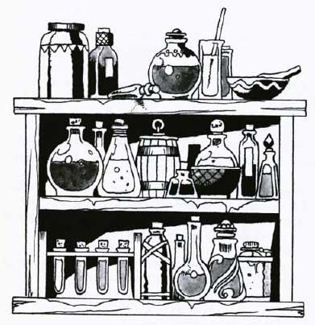
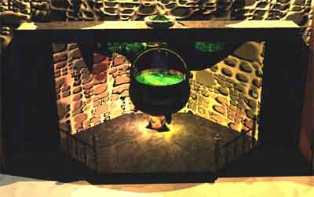

|
 |
Le pozioni magiche : Le pozioni possono trovarsi in diversi tipi di contenitori, alcuni dei quali sono appositamente fragili, quelli in vetro, in cristallo (che permettono di vedere il liquido) e in ceramica, in modo tale da permettere il lancio della pozione e la fuoriuscita del liquido; altri sono rigidi in metallo (solitamente rame, piombo o bronzo). La differenza di contenitori riflette la diversa tipologia di attivazione delle pozioni. Le pozioni magiche, infatti, solitamente hanno due modi di attivazione: Ingestione : La pozione deve essere bevuta da una creatura ed ha effetto esclusivamente sulla stessa. Se la pozione è a portata (ad esempio alla cintura) l'operazione di apertura e ingestione è relativamente veloce (+1 fattore iniziativa) ma la pozione non avrà effetto ancora per alcuni istanti (1d4+1 punti di fattore iniziativa di attesa). Bere una pozione durante l'effetto di un'altra (oppure entro 10 rounds dalla consumazione di una pozione ad effetti permanenti) può essere pericoloso e scatenare effetti magici inusuali. Si noti che è il mero l'atto volontario di bere la pozione a far rilasciare gli effetti magici, non occorre che quindi il liquido sia digerito (per questo motivo anche creature non morte possono utilizzare pozioni magiche). Versamento : La pozione deve essere versata fuori dal contenitore ed il liquido deve toccare una qualsiasi superficie materiale. Nel luogo di versamento del liquido si avrà il centro dell'area d'effetto della pozione. Lanciare una pozione è un'azione e richiede un fattore di iniziativa pari a + 3 (più eventuale mezzo movimento), la pozione avrà effetto a partire dalla fine del round in questione nel suo punto di impatto. Le pozioni magiche possono essere create solitamente a partire dal 9° livello di esperienza dai maghi in laboratorio e dai chierici (quelle clericali) con riti differenti a seconda del culto di appartenenza. A meno che non sia stabilito diversamente la durata degli effetti di una pozione è uguale a 1d6 turni. |
